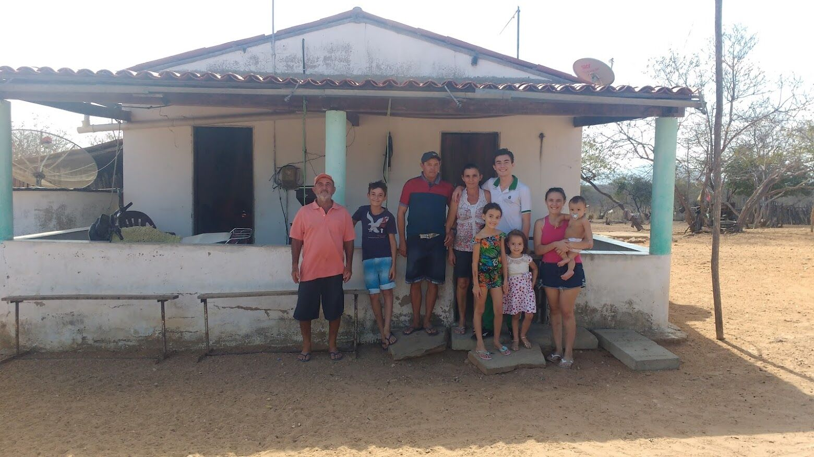
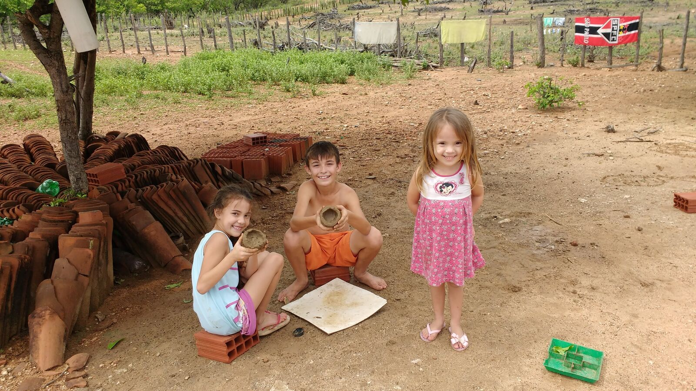

A road that flooded every winter
I grew up in a rural settlement in Santa Quitéria, in the interior of Ceará, Brazil, the third of six children in a family of farmers. Until I was eight, we had no electricity. A few minutes before the school bus came, I would go to my neighbor's house and watch whatever was on his TV, a window into worlds beyond the one I lived in.
One of those mornings took me to Javé, the village in the Brazilian film The Storytellers: told that a dam would flood their community, its residents decided to write down its history to save it. Like Javé, we lived under the shadow of a proposed uranium mine. For most of my childhood the road to school flooded every rainy season, and I missed exams because the bus could not get through. I had a great many questions, and the answers were almost never within reach.
The answers exist, and they are not distributed evenly. What separates me from most of the people I grew up with is not ability. It is access.


